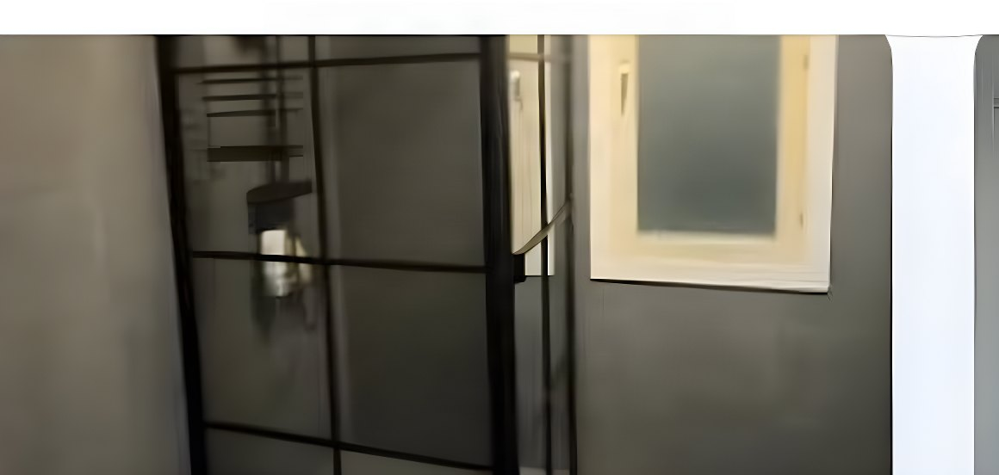

Tjänst · Uddevalla, Trollhättan & Vänersborg
Microcement — fogfria ytor i Uddevalla och Trestad
Golv, väggar, bänkskivor och hela badrum i ett stycke. Microcement läggs i tunna lager och ger en fogfri yta med stenkänsla — ofta direkt ovanpå det du redan har.

Vad microcement är — och varför vi lägger det
Microcement är cement, fin sand och polymerer som läggs i två till tre tunna lager och förseglas. Resultatet är en sammanhängande yta med stenkänsla, utan skarvar, och den kan läggas på nästan allt: kakel, klinker, betong, flytspackel, puts, gips och målade ytor.
Vi har satt kakel och klinker i många år och lägger microcement med samma inställning: underarbetet avgör. Ett ytskikt kan aldrig bli bättre än det underlag det ligger på, hur snyggt det än stryks på.
Därför säger vi nej ibland. Sviktar golvet, är källaren fuktig eller sitter kaklet löst är microcement fel lösning — och det säger vi innan du betalat för något.
Fast pris efter besiktning. Microcement kostar mer i arbetstid än kakel, men sparar ofta hela rivningen. Vi räknar på ditt badrum eller din yta och du får siffran skriftligt innan vi börjar.
Fördelar
- Fogfritt — inga fogar att skura eller byta
- Tunt, bygger bara några millimeter
- Kan läggas på befintligt underlag
- Mindre rivning, mindre damm, kortare tid
- Tåligt mot fukt, spill och dagligt slitage
- Många kulörer — slät eller med struktur
- Lätt att torka av med milt medel
Användningsområden
Var microcement gör störst skillnad
Vad det kan läggas på — och vad vi säger nej till
Grundregeln är enkel: microcement följer underlaget. Rör sig underlaget spricker ytan, hur snyggt den än läggs. Därför bedömer vi alltid underlaget först.
Fungerar bra
- Kakel och klinker som sitter fast
- Betong och flytspackel
- Putsade och målade väggar, gips
- Plastmatta i gott skick
- Träfiber- och spånskivor som är stabila
Vi säger nej
- Massivt trä som rör sig med fukten
- Sviktande eller löst liggande underlag
- Fuktig källare utan dränering
- Sprucket underlag där sprickorna inte åtgärdas
- Underlag där tätskiktet är skadat
Vi sätter också kakel och klinker. Det gör att du kan få tätskikt, kakel och microcement av samma firma — ingen samordning, ingen som pekar på någon annan om något inte håller.
Våtrum
Tätskiktet är det som avgör
Det finns en vanlig missuppfattning om microcement i badrum: att det är ytskiktet som godkänns. Så är det inte. I ett våtrum är det tätskiktet under ytan som godkänns — kakel, klinker och microcement är materialet man ser, medan det är folien bakom som gör rummet vattentätt.
Vi gör tätskiktet enligt branschreglerna och dokumenterar arbetet med bilder, så att du har papperen om något skulle hända. Är tätskiktet redan gjort och intakt går microcement utmärkt att lägga ovanpå. Är det trasigt eller tveksamt rivs det först — det är inte där man sparar pengar.
Läs gärna mer om vad som gäller för våtrum på gvk.se.
Arbetsgång
Så gör vi — steg för steg
- 1
Vi bedömer underlaget
Fukt, rörelse och fastsättning. Här avgörs om resultatet kommer att hålla, och om microcement är rätt val alls.
- 2
Lagning och grundning
Sprickor och ojämnheter åtgärdas, ytan rengörs och grundas så att massan fäster ordentligt.
- 3
Armering
I hörn, skarvar och vid genomföringar armerar vi där rörelser uppstår — det är där sprickor annars börjar.
- 4
Två till tre lager
Tunna lager läggs och slipas mellan varven. Tjocka lager torkar fel och ger sämre yta.
- 5
Försegling
Ytan förseglas i vald glans — matt, halvmatt eller sidenmatt. Det är förseglingen som gör den tålig mot fukt och slitage.
- 6
Härdning och överlämning
Vi går igenom hur du sköter ytan och när den kan belastas fullt. Sedan städar vi efter oss.
Kulör och yta
Microcement finns i allt från ljusgrå och sand till varm beige och mörk grafit. Ytan kan vara slät eller ha mer struktur, och hur mycket liv materialet får beror på kulören, hur det läggs och temperaturen i rummet. Alla ytor blir därför unika — det är en del av poängen.
Vi tar med prover så att du ser tonen i din egen belysning innan vi börjar, i stället för att välja efter en bild på en skärm.
Så håller du ytan fin
- Ljummet vatten och pH-neutralt medel
- Mjuk mopp eller trasa — inte skurborste
- Undvik syra, ammoniak, klorin och skurmedel
- Torka upp vin, kaffe och olja innan det ligger kvar
- Ställ inte heta kokkärl direkt på ytan
Vanliga frågor
Frågor vi får om microcement
Pengar, risk och det praktiska — i den ordningen folk brukar fråga.
Vad är microcement?
Microcement är ett tunt ytskikt som byggs upp av cement, fin sand och polymerer och läggs i två till tre lager. Det ger en fogfri yta med stenkänsla och kan läggas på de flesta underlag, både ute och inne.
Vad kostar microcement i Uddevalla?
Priset beror på yta, underlag, kulör och vilken glans du väljer. Microcement är som mest kostnadseffektivt när det befintliga underlaget kan behållas, eftersom rivning, nytt tätskikt och nytt kakel då inte behövs. Du får ett fast pris efter besiktning.
Kan microcement läggas direkt på kakel?
Ja, om plattorna sitter fast, underlaget är jämnt och tätskiktet är intakt. Då slipper du riva ut det gamla, bygga upp väggen igen och köpa nytt kakel — det är där den stora besparingen ligger.
Går det att lägga microcement på plastmatta?
Ja, på en plastmatta i gott skick. Kraven är att ytskiktet är helt, att golvbrunnen är frisk, att fallet mot brunnen är godkänt och att det inte finns misstanke om läckage. Är något av det tveksamt rivs badrummet först.
Är microcement godkänt i badrum?
I ett våtrum är det inte ytskiktet som godkänns, utan tätskiktet under det. Kakel, klinker och microcement är ytan man ser — det är folien bakom som gör rummet vattentätt. Vi gör tätskiktet enligt branschreglerna och dokumenterar med bilder.
Kan microcement spricka?
Microcement är ett ytskikt och följer därför underlaget. Är underlaget stabilt håller ytan; rör det sig följer mikrocementen med. Risken är liten när underlaget är fast, gamla sprickor lagas, grundningen blir rätt och lagren inte läggs för tjockt eller torkar för snabbt.
Fungerar microcement med golvvärme?
Ja. Värmen stängs av eller hålls låg i god tid före läggningen, ytan får inte vara för varm när massan läggs, och efteråt fas värmen tillbaka långsamt över flera dagar. Exakta tider står i offerten.
Kan man lägga microcement i källare?
I en isolerad och dränerad källare går det bra. I en torr källare utan dränering kan golv fungera, men med viss risk för missfärgning, och vissa produkter krävs för väggar. Är källaren fuktig avråder vi helt.
Hur länge håller microcement?
I ett badrum är det tätskiktet under ytan som sätter livslängden, och det håller i decennier. Själva ytan håller beroende på hur mycket den används — i ett hem många år, och går att fräscha upp utan att byta underlag.
Hur gör man rent microcement?
Ljummet vatten och ett pH-neutralt rengöringsmedel, med mjuk mopp eller trasa. Undvik skurmedel, syra, ammoniak, klorin och slipande medel, och använd inte skurborste. Torka upp vin, kaffe och olja innan det ligger kvar.
Lägger ni microcement i Trollhättan och Vänersborg?
Ja. Vi utgår från Uddevalla och arbetar i hela Trestad samt längs Bohuslänskusten och uppåt Dalsland. Ring om du är osäker på om vi kommer till dig.
Områden
Vi lägger microcement i hela Trestad
Utgår från Uddevalla. Bygderna runtomkring tar vi oss också till.
- Uddevalla
- Trollhättan
- Vänersborg
- Ljungskile
- Munkedal
- Färgelanda
- Lilla Edet
- Stenungsund
- Tjörn
- Orust
- Lysekil
- Åmål
- Strömstad
- Lidköping
Kostnadsfri offert på microcement
Skicka några rader om ytan — vad den sitter på i dag och ungefär hur stor den är — så återkommer vi med pris och tid.